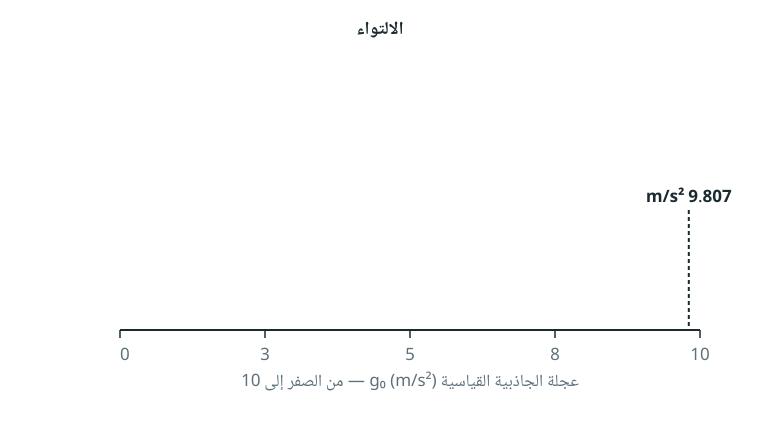

الالتواء
Torsion
الالتواء هو تشوّه عنصر إنشائي بفعل عزم يلوي مقطعه حول محوره الطولي، وينتج إجهادات قص تتناسب مع المسافة من المحور، وزاوية الالتواء تتناسب مع العزم وطول العنصر.
الالتواء حالة تحميل يخضع فيها عنصر — عمود أو قضيب — لعزم حول محوره الطولي، فيدور مقطع عند نهايته بالنسبة لمقطع آخر بزاوية φ. في المقطع الدائري، يزداد إجهاد القص τ خطياً مع المسافة من المحور: τ = T·r/J، حيث T العزم وr المسافة من المحور وJ عزم القصور القطبي للمقطع. وأقصى إجهاد عند السطح الخارجي: τ_max = T·c/J حيث c نصف القطر. وزاوية الالتواء: φ = T·L/(G·J)، حيث L الطول وG معامل القص. مثال: عمود فولاذي صلب قطره 0.050 m وطوله 1.00 m يحمل عزماً 500 N·m، وG = 79.3 GPa: J = πd⁴/32 = 6.136×10⁻⁷ m⁴، وφ = 500×1.00/(79.3×10⁹ × 6.136×10⁻⁷) = 0.0103 rad = 0.59°.
كيف تعمل الظاهرة؟
عند تطبيق عزم ملتوٍ، تدور كل طبقة أسطوانية داخل المقطع بزاوية تزيد مع البعد عن المحور، لأن الطبقات الخارجية تقطع مسافة أطول في الدوران نفسه. هذا التدرّج في الإزاحة ينتج تشوّه قص، ومنه إجهاد قص يتناسب خطياً مع نصف القطر. المحور نفسه لا يخضع لتشوّه، ولذلك إجهاد القص عنده صفر. والمقاومة للالتواء تأتي من عزم القصور القطبي J، وهو مقياس لتوزيع المساحة بعيداً عن المحور: المقطع المجوف يوزّع مادته بعيداً فيقاوم الالتواء بكفاءة أعلى لكل وحدة كتلة. وهذا هو سبب استعمال الأعمدة المجوفة في التطبيقات التي تُشترط فيها خفة الوزن.
العلاقة بالأرقام
τ = T·r/J، وτ_max = T·c/J، وφ = TL/(GJ)، وJ = πd⁴/32 للمقطع الصلب وJ = π(d_o⁴ − d_i⁴)/32 للمجوف. والاستطالة الزاوية لكل وحدة طول θ = T/(GJ). والقدرة المنقولة: P = T·ω = 2πNT/60. مثال عددي: d = 0.050 m → J = 6.136×10⁻⁷ m⁴؛ T = 500 N·m → τ_max = 20.4 MPa؛ φ = 0.0103 rad على متر واحد. ولو كان d = 0.040 m لصار J = 2.513×10⁻⁷ m⁴ وτ_max = 39.8 MPa — أي تضاعف الإجهاد تقريباً بنقص القطر 20%.
مفاهيم متقاربة
يُفرَّق بين الالتواء والانحناء بمحور العزم: الالتواء عزم حول المحور الطولي، والانحناء عزم حول محور عرضي. ويُفرَّق بين الالتواء والقص البسيط بتوزيع الإجهاد: القص البسيط موحّد على المقطع، والالتواء خطي مع نصف القطر. ويُفرَّق بين J (عزم القصور القطبي) وI (عزم القصور المساحي المستعمل في الانحناء): الأول يخص الالتواء والثاني الانحناء، والخلط بينهما خطأ مقداري شائع. ويُفرَّق أخيراً بين زاوية الالتواء والتوائه اللدن: الزاوية كمية مرنة تُحسب من GJ، والتوائه اللدن يحدث حين يتجاوز τ_max حدّ الخضوع.
حدود التطبيق
صيغة τ = Tr/J صالحة للمقاطع الدائرية (الصلبة والمجوفة) وفي المدى المرن، وللمواد المتجانسة الخواضعة. في المقاطع غير الدائرية يتشوّه المقطع خارج مستواه (warping) ولا تبقى المقاطع المستوية مستوية، فتلزم صيغ خاصة تعتمد على شكل المقطع. وفي المقاطع الرقيقة الجدران المفتوحة، كالمقاطع I وC، يكون الالتواء المقيّد مسيطراً وتلزم نظرية الالتواء غير المنتظم. وعند تجاوز حدّ الخضوع يصبح التوزيع غير خطي وتفقد الصيغة صلاحيتها. وأخيراً في المواد المركبة والمواد ذات التباين الاتجاهي لا يكفي معامل قص واحد.

| الكمية | القيمة | المصدر |
|---|---|---|
| عزم القصور القطبي لعمود d=0.050 m | 6.136×10⁻⁷ m⁴ | [2] |
| زاوية الالتواء لعمود 1.00 m بعزم 500 N·m | 0.0103 rad | [2] |
المصادر
- 1 CODATA Value: standard acceleration of gravity — NIST — CODATA 2022 recommended values (2024). physics.nist.gov/cgi-bin/cuu/Value?gn · اطُّلع عليه 2026-11-21
- 2 The International System of Units (SI), 9th edition (2019) — BIPM — Bureau International des Poids et Mesures (2019). www.bipm.org/en/publications/si-brochure · اطُّلع عليه 2026-11-21
- 3 CODATA Value: Avogadro constant — NIST — CODATA 2022 recommended values (2024). physics.nist.gov/cgi-bin/cuu/Value?na · اطُّلع عليه 2026-11-21
استشهد بهذا المصطلح
الصيغتان مبنيتان من بيانات الصفحة نفسها: العنوان والتاريخ ورابط النسخة المنشورة.
الالتواء — Torsion. (2026). ديوان المعرفة — انفراد. https://infiradev.com/diwan/terms/term-torsion.html
@misc{term-torsion2026,
title = {الالتواء},
titleaddon = {Torsion},
howpublished = {{ديوان المعرفة — انفراد} — مرجع علمي عربي},
year = {2026},
url = {https://infiradev.com/diwan/terms/term-torsion.html},
urldate = {2026-11-26},
note = {مراجعة علمية: hermes (مراجعة معتمدة 2026-11-26)}
}
راجعه: hermes (مراجعة معتمدة 2026-11-26) · 2026-11-26 · آخر تحديث 2026-11-21